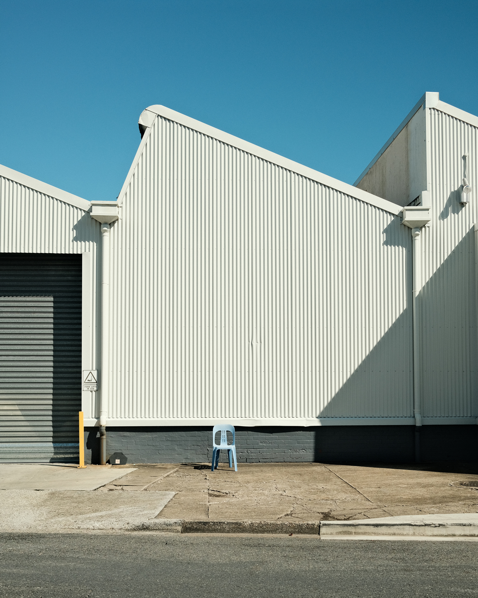
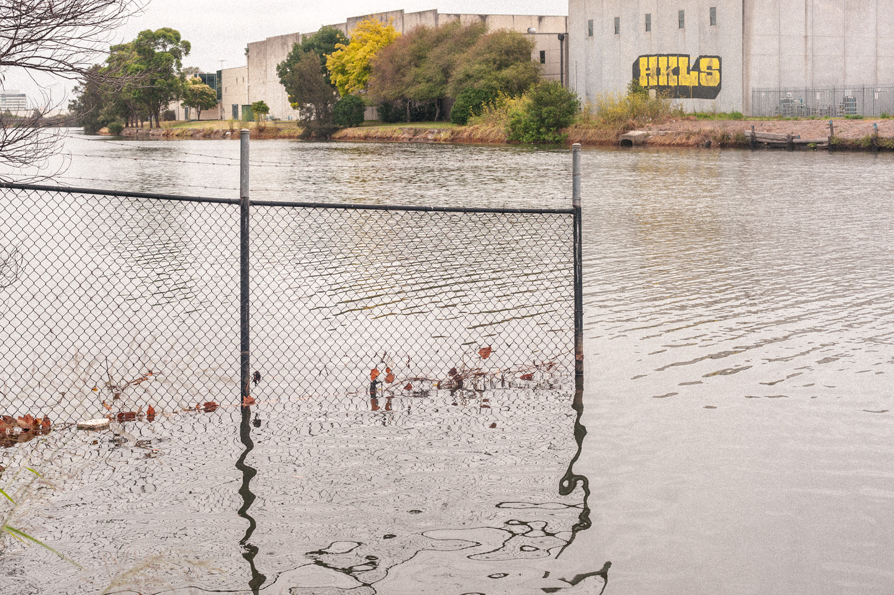
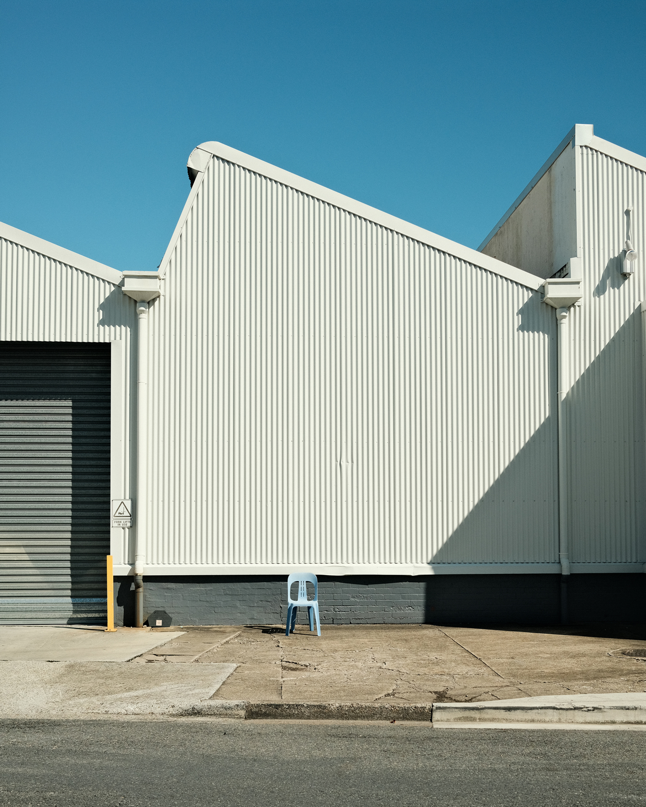
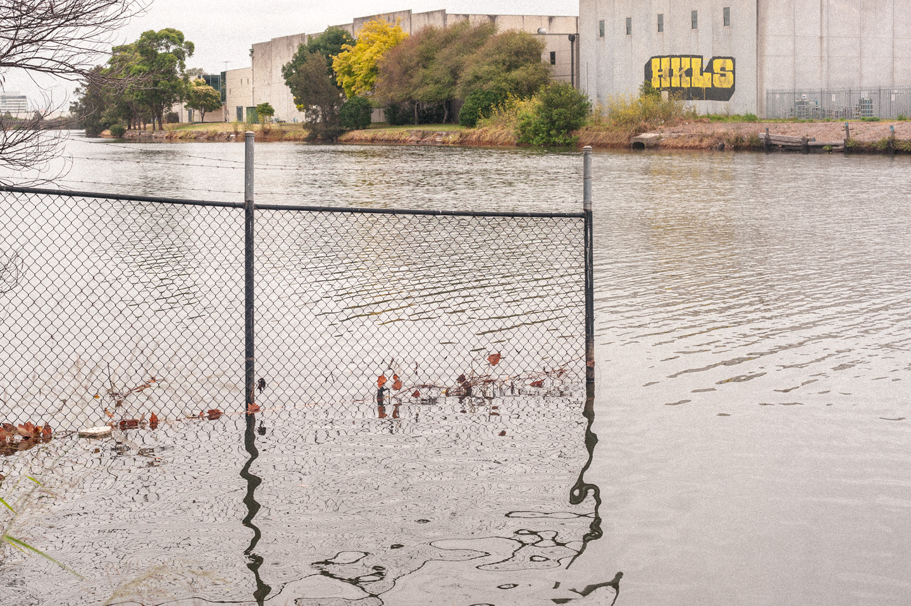
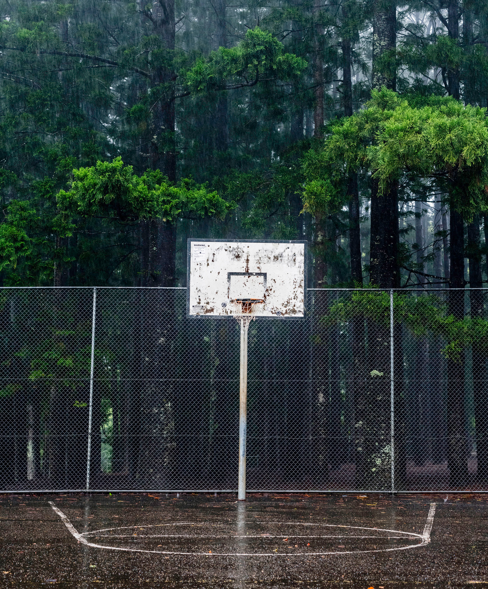
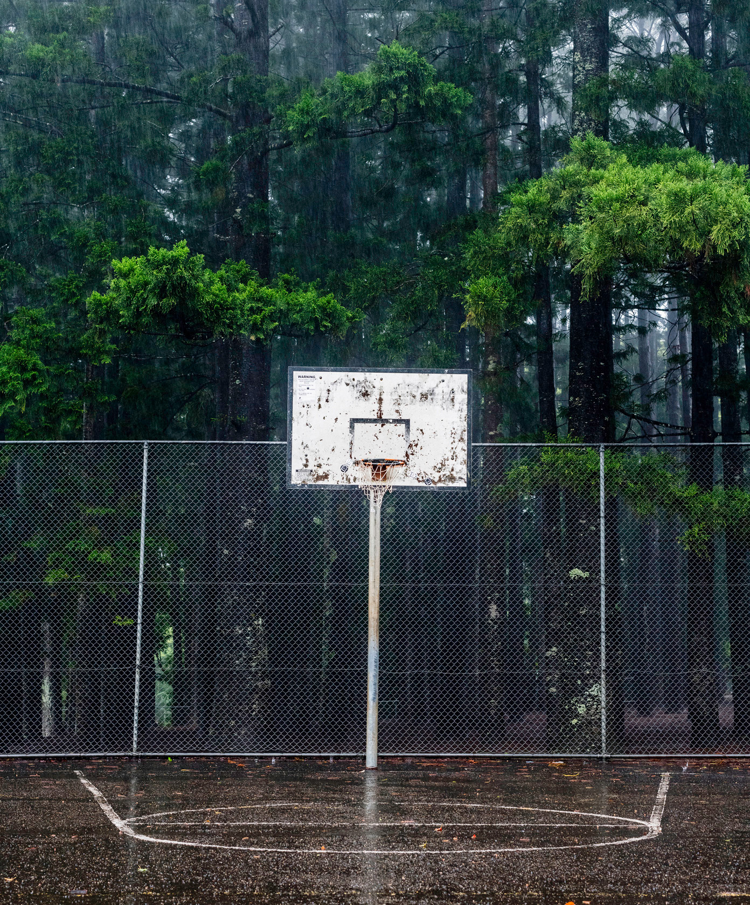
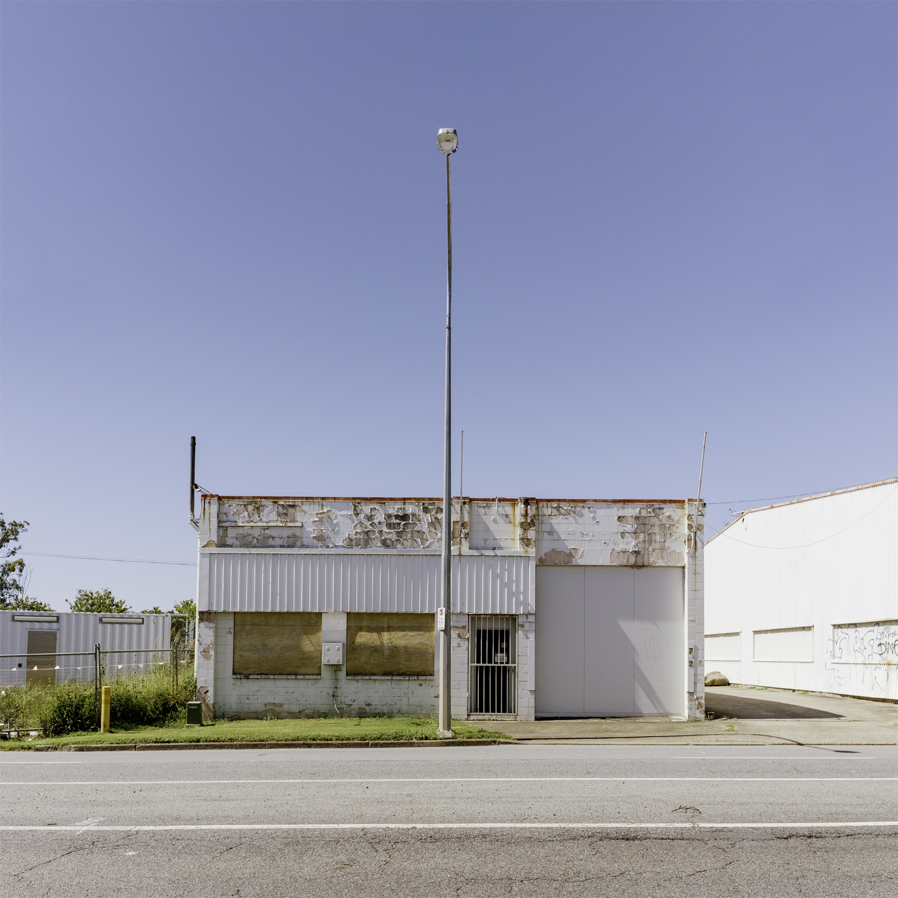
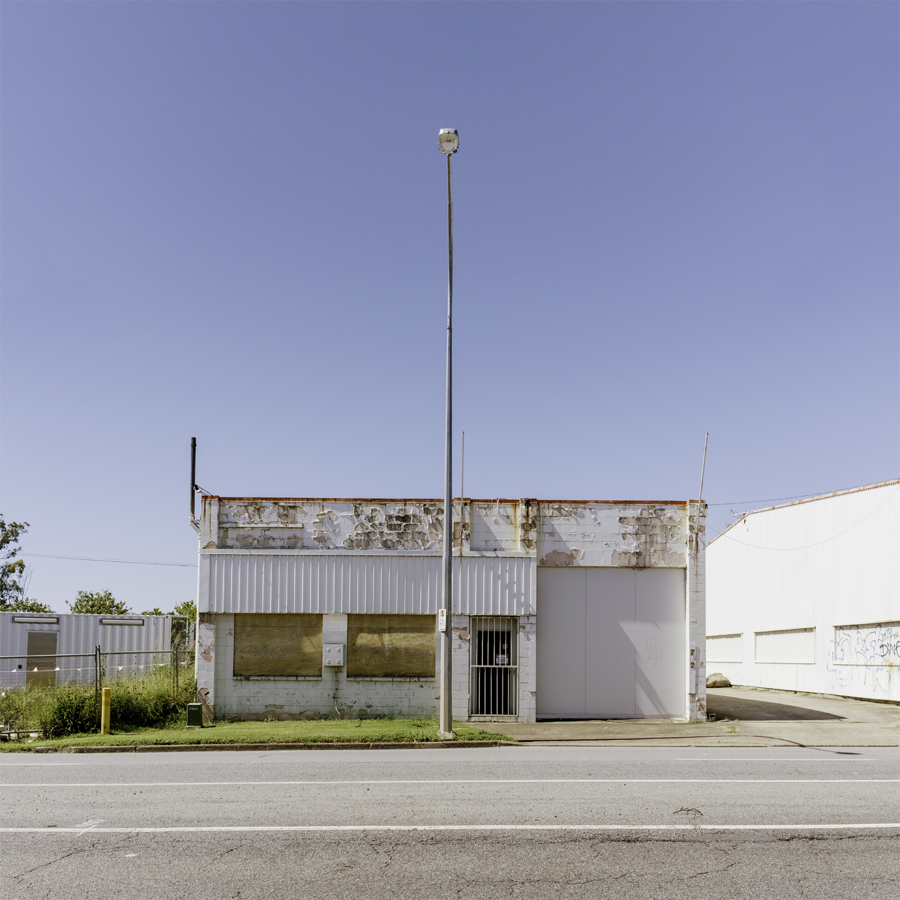
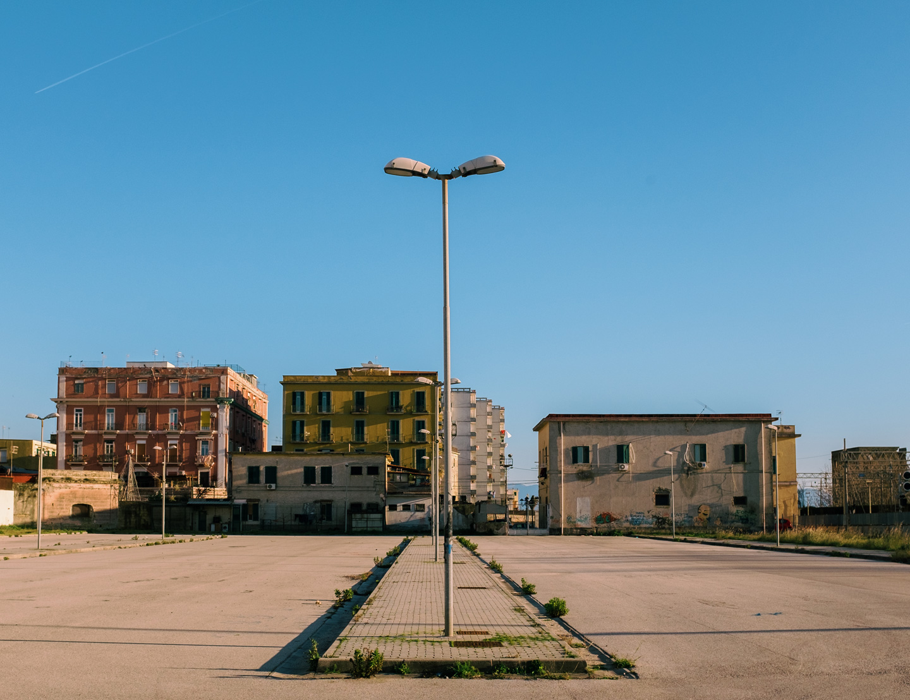
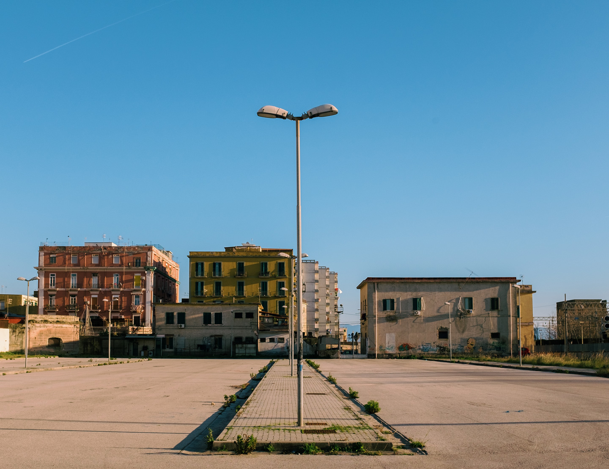

Small Victories
Photography by Terrence Gillespie. View Bio.
Bio
Born in Lima, Peru, Terrence was introduced to the camera at a young age & his first images mimicked those of his maternal grandfather Pedro Paz.
Terrence's work explores themes of solitude, belonging and non-places - a term coined by Marc Augé which refers to anthropological spaces of transience where human beings remain anonymous.
He lives & works on Kabi Kabi Country / South East Queensland, Australia.
Awards
2D Excellence Award & Aquisition - Local Contemporary Art Prize 2025
Finalist - Galah Regional Photography Prize 2025
Viewfinders Selection - New Light: Photography Now + Then 2024
Finalist - Du Rietz Art Awards 2024
2D Highly Commended - Du Rietz Art Awards 2022
Finalist - Sunshine Coast Environment Photography Awards 2016

 





 



 

 
